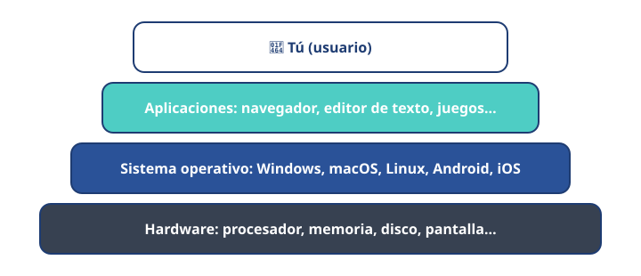

Módulo 6: Software: los programas
Sin software, el hardware no sabe qué hacer.
Informática básica · Módulo 6 de 12
¿Qué es el software?
El software es el conjunto de programas: instrucciones que le dicen al hardware qué hacer. Se organiza en capas: tú usas las aplicaciones, las aplicaciones se apoyan en el sistema operativo y el sistema operativo controla el hardware.

Cada capa se apoya en la de abajo.
Tipos de software
⚙️
Sistema operativoGestiona el equipo: Windows, macOS, Linux, Android, iOS.📝
AplicacionesProgramas para tareas: navegador, procesador de textos, editor de fotos, juegos.🔌
Controladores (drivers)Permiten al sistema usar una pieza concreta: impresora, tarjeta gráfica…Licencias: ¿qué puedo hacer con un programa?
| Tipo | Qué significa | Ejemplo |
|---|---|---|
| Software libre | Puedes usarlo, estudiarlo, modificarlo y compartirlo. Suele ser gratuito. | LibreOffice, Firefox, VLC, GIMP, Linux |
| Propietario (de pago) | Pagas una licencia para usarlo con las condiciones del fabricante. | Algunas versiones de Microsoft Office, Photoshop |
| Freeware | Gratuito, pero no puedes ver ni modificar su código. | Muchas apps gratuitas |
| Freemium | Gratis lo básico; pagas por funciones extra. | Muchos juegos y apps del móvil |
Cuidado con el software «pirata» o crackeado: además de ser ilegal, es una de las vías más habituales para meter virus en tu equipo. Si no puedes pagar un programa, busca una alternativa libre o gratuita.
🧩 ¿Cuál de estos es un sistema operativo?
🧩 Puedes usar, modificar y compartir legalmente un programa. ¿Qué tipo de licencia tiene?
✍️ Actividad: tus programas
Elige 5 programas o apps que uses a menudo y busca qué tipo de licencia tienen. ¿Existe una alternativa libre para alguno?
Resumen: sistema operativo + aplicaciones + controladores. Fíjate en la licencia y evita el software pirata.